Embarquez avec moi pour une immersion au cœur de mon aventure polonaise, partagée avec ma famille et mes amis.
Journal de Voyage
02 Mars 2026
Au coeur du Ramadan
Cela fait deux semaines que je suis arrivé en Pologne. Sofiane, un copain avec qui je suis, est algérien. Il fait donc le ramadan. Cela me donne une bonne occasion de m'intéresser à cette pratique. Il mange uniquement le soir et prépare des plats typiques. Nous avons donc le droit de nous régaler, nous aussi !
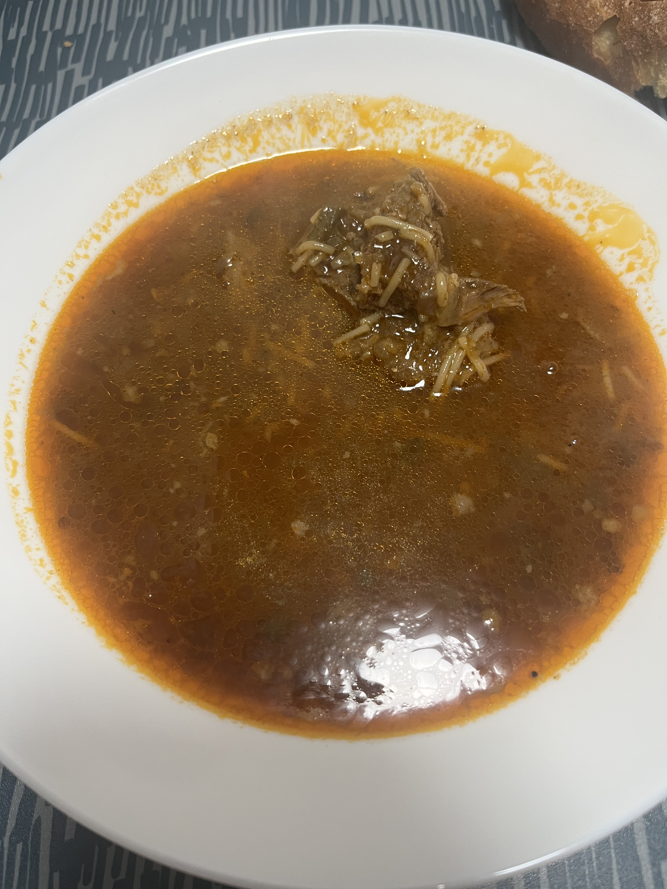
Shoarbah, soupe traditionnelle.
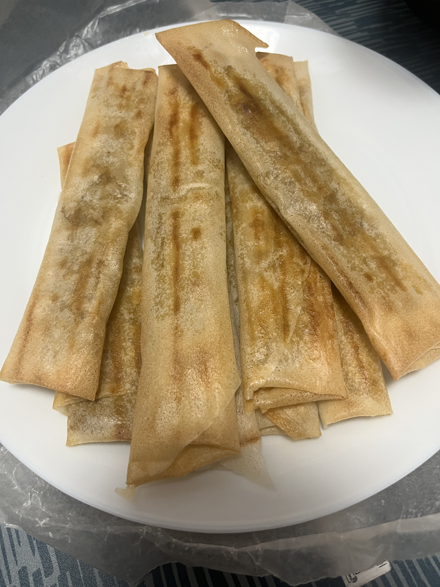
Bourek.
01 Mars 2026
Passage au Palais de la Culture et de la Science
Après être allés à la musculation avec mes copains, nous sommes allés manger au Burger King. Il est juste à côté du Palais de la Culture et de la Science (Pałac Kultury i Nauki), nous en avons profité pour nous y en approcher.
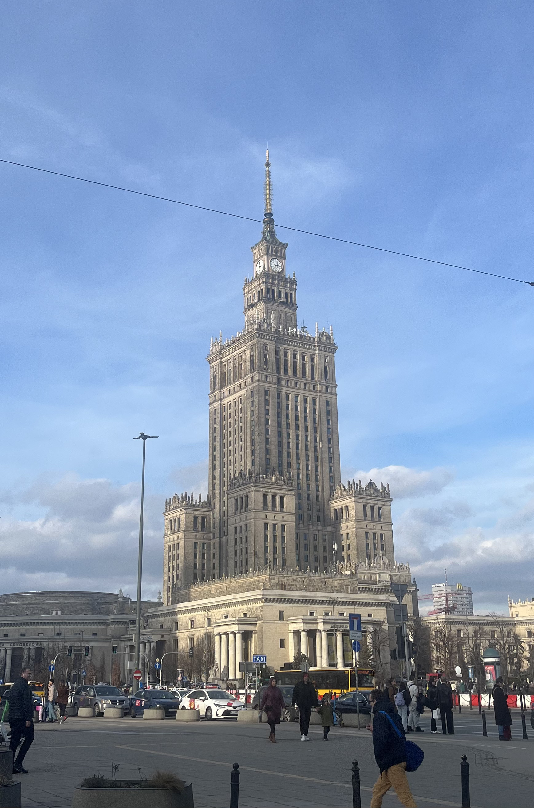
Palais de la Culture et de la Science.
C'est un monument historique incontournable qui domine le centre-ville de Varsovie. Symbole architectural de la ville, il abrite de nombreux musées et offre une vue panoramique imprenable depuis sa terrasse au 30ème étage.
27 Février 2026
Je goutte la nourriture polonaise
Pour la première fois, nous sommes allés manger dans un restaurant polonais. Il est très bien noté et situé dans la principale rue de la vieille ville de Varsovie, près du Palais Présidentiel.
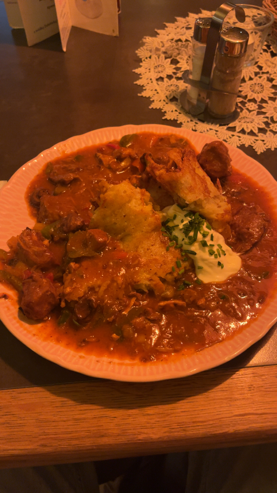
Grande galette de pomme de terre au goulash.
Voici mon plat : Large potato pancake with goulash
Et sa description...
Cut pork shoulder and fry with mashed garlic and shallots. Braise in its own juices for quite a while. Towards the end of cooking, add fresh yellow and red peppers, mushrooms, and garlic. Sprinkle with fresh chives. Mix freshly grated potatoes with onions, salt, and pepper, then add a small amount of flour. Fry in a pan until golden in colour.
En français : Grande galette de pomme de terre au goulash
Couper l'épaule de porc et la faire revenir avec de l'ail écrasé et des échalotes. Laisser braiser dans son propre jus pendant un long moment. Vers la fin de la cuisson, ajouter des poivrons frais (jaunes et rouges), des champignons et de l'ail. Saupoudrer de ciboulette fraîche. Mélanger des pommes de terre fraîchement râpées avec des oignons, du sel et du poivre, puis ajouter une petite quantité de farine. Faire frire à la poêle jusqu'à l'obtention d'une couleur dorée.
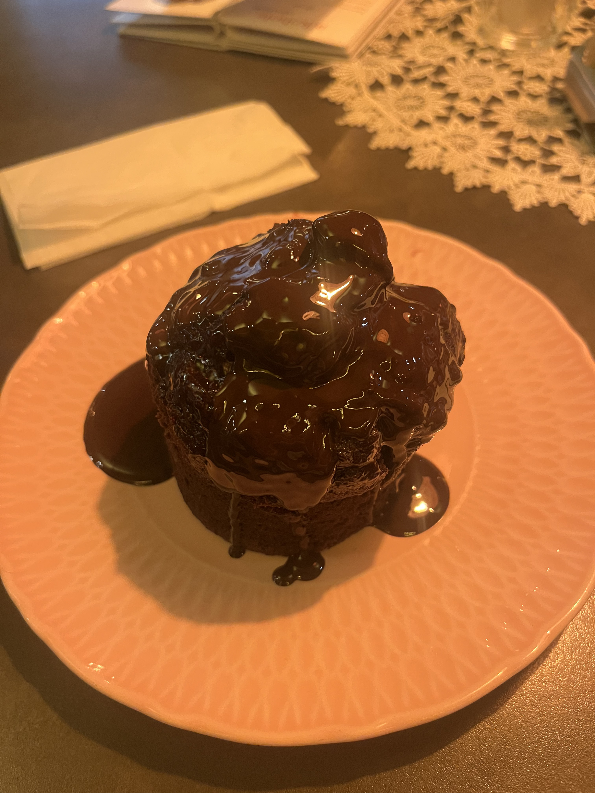
Gâteau brioché sucré au chocolat avec une confiture de cerises.
Voici mon dessert : Chocolate sweet yeast cake with cherry preserve, covered in warm milk chocolate
En français : Gâteau brioché sucré au chocolat avec une confiture de cerises, nappé de chocolat au lait chaud.
La nourriture n'est pas très chère en Pologne, j'ai payé 68 zloty mon repas, ce qui équivaut a 16€10 !
26 Février 2026
Première balade dans la vieille ville
Nous avons été nous balader dans le centre historique de Varsovie. J'ai pris quelques photos. C'est super beau et très bien entretenu.
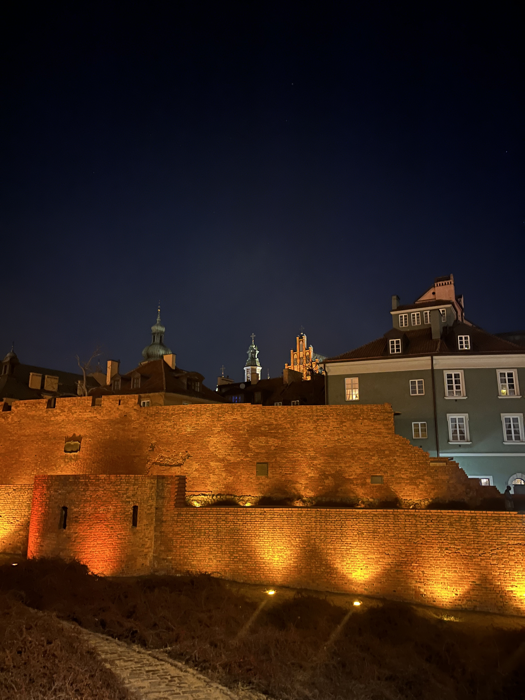
Les Remparts de la Vieille Ville (Barbakan).
On voit les murs de défense médiévaux en briques rouges qui entourent la Vieille Ville de Varsovie. En arrière-plan, on aperçoit les clochers des églises du quartier historique.
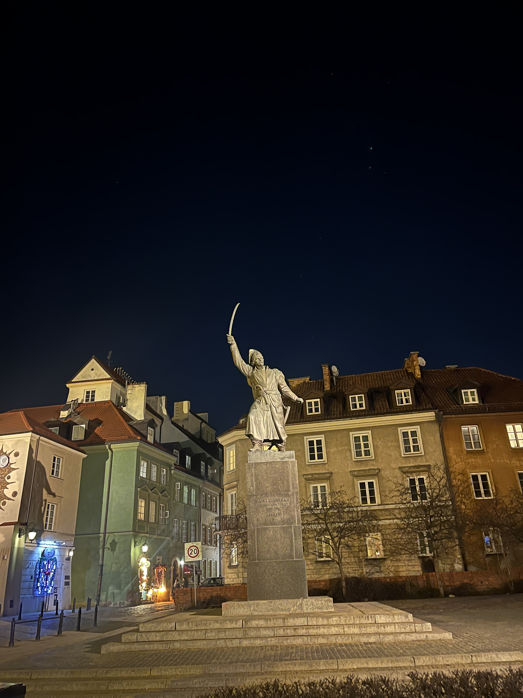
Monument à Jan Kiliński.
Cette statue représente Jan Kiliński, un cordonnier devenu colonel et héros de l'insurrection de Kościuszko en 1794. Elle est située sur la place près des remparts.
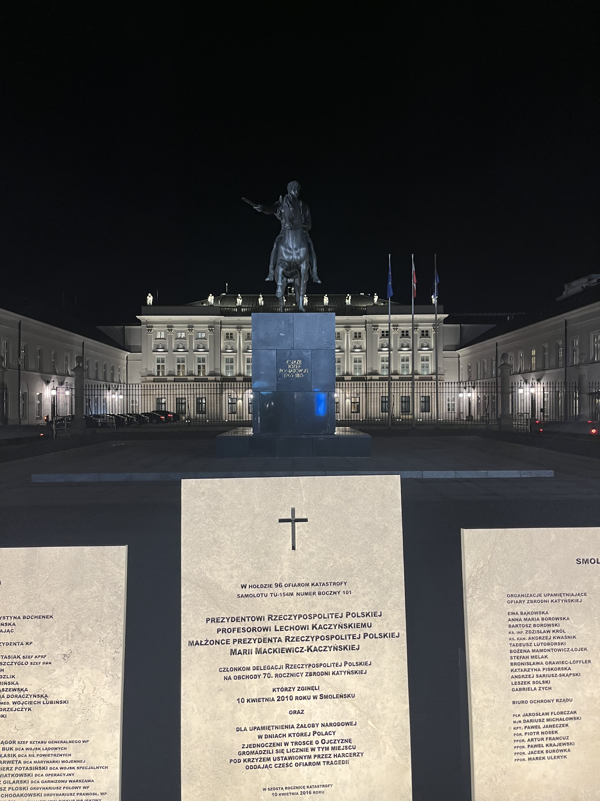
Palais Présidentiel et Monument à Poniatowski.
Au premier plan, on voit les plaques commémoratives de la catastrophe aérienne de Smolensk (2010). Derrière, il y a la statue équestre du Prince Józef Poniatowski, située devant le Palais Présidentiel (Pałac Prezydencki).
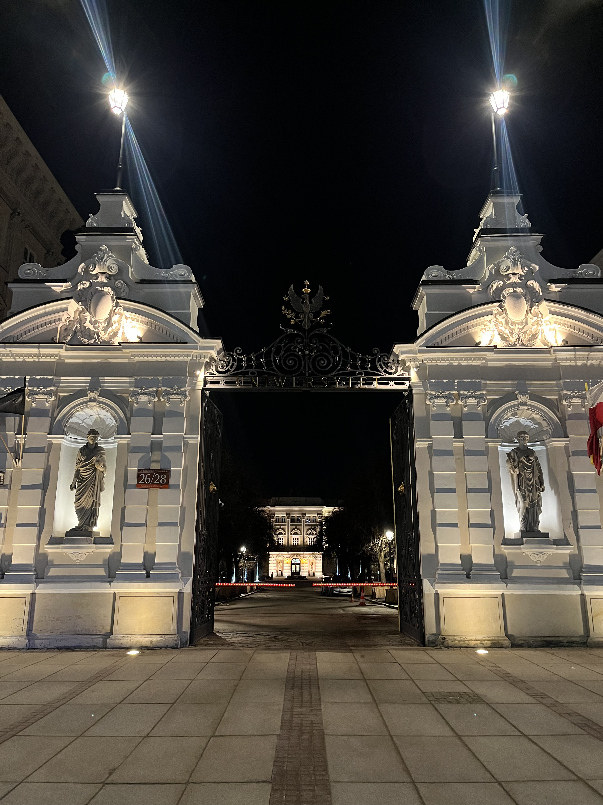
Porte Principale de l'Université de Varsovie.
Il s'agit de la porte d'entrée de l'Université de Varsovie (Uniwersytet Warszawski), située sur la voie royale (Krakowskie Przedmieście). On y reconnaît l'emblème de l'aigle couronné.
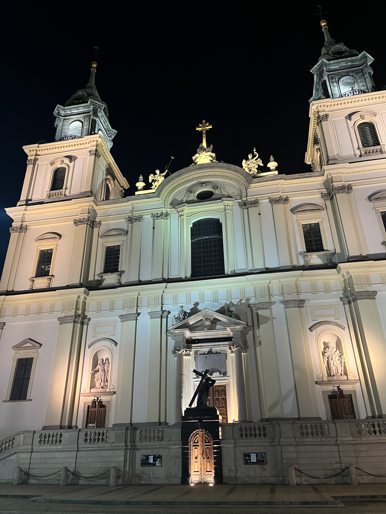
Basilique Sainte-Croix.
C'est la façade de la Basilique Sainte-Croix (Bazylika Świętego Krzyža). Elle est célèbre pour abriter le cœur du compositeur Frédéric Chopin dans l'un de ses piliers. On voit la statue du Christ portant sa croix devant l'entrée.
23 Février 2026
C'est la vraie rentrée
Je commence les cours aujourd'hui, au programme : du réseau informatique (Computer Network) et de la programmation orientée objet. Les cours sont en anglais, il est un petit peu plus compliqué de suivre mais cela permet de rester plus concentré tout au long du cours.
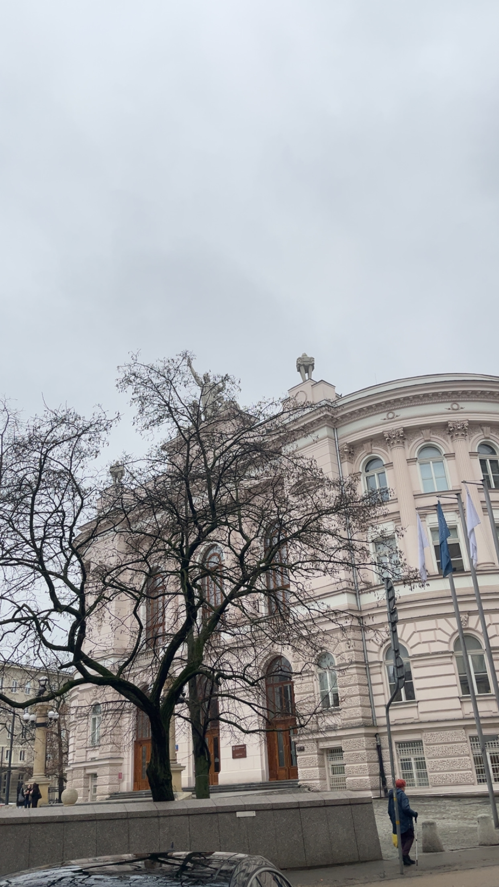
Devanture de l'université.
L'Université Technologique de Varsovie est très jolie ! Ce batiment est malheureusement pas le mien... Il est réservé aux doctorants et à l'administration.
22 Février 2026
C'est la pré-rentrée...
Les cours commencent déjà demain (lundi 23 février). Un cours de présentation de l'école, donnant des informations impératives aux étudiants, a été organisé ce dimanche 22 février.
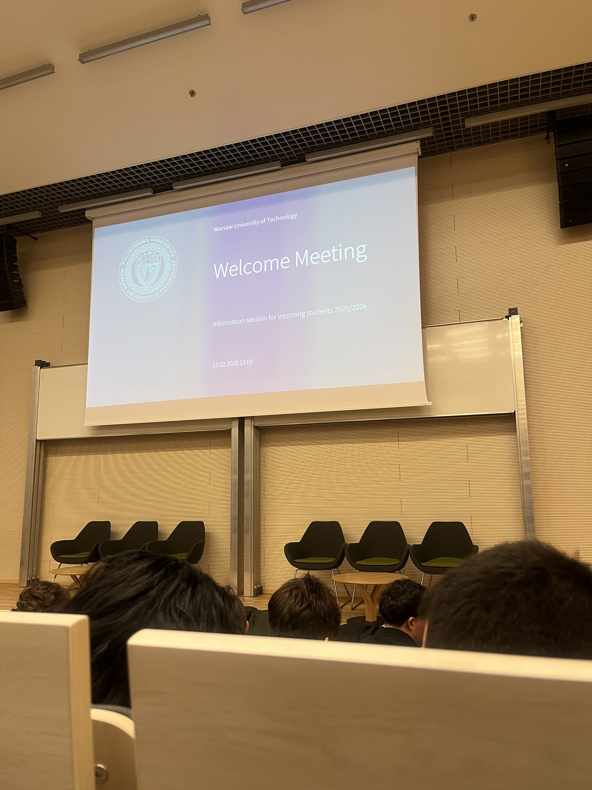
Réunion de présentation de l'école.
L'établissement est immense. Il est facilement accessible via plusieurs lignes de tramway. L'amphithéâtre où a eu lieu la présentation était très moderne ; j'ai hâte de découvrir les autres salles de classe.
21 Février 2026
Visite d'HighLine, la plus haute tour d'Europe
Nous sommes arrivés il y a quelques jours. Après un petit temps d'adaptation pour s'organiser (inscription à la salle de sport, courses, etc.), nous avons visité la HighLine de Varsovie ce samedi soir. C'est la plus haute tour d'Europe. Nous y avons découvert l'histoire de la ville et celle de la tour.
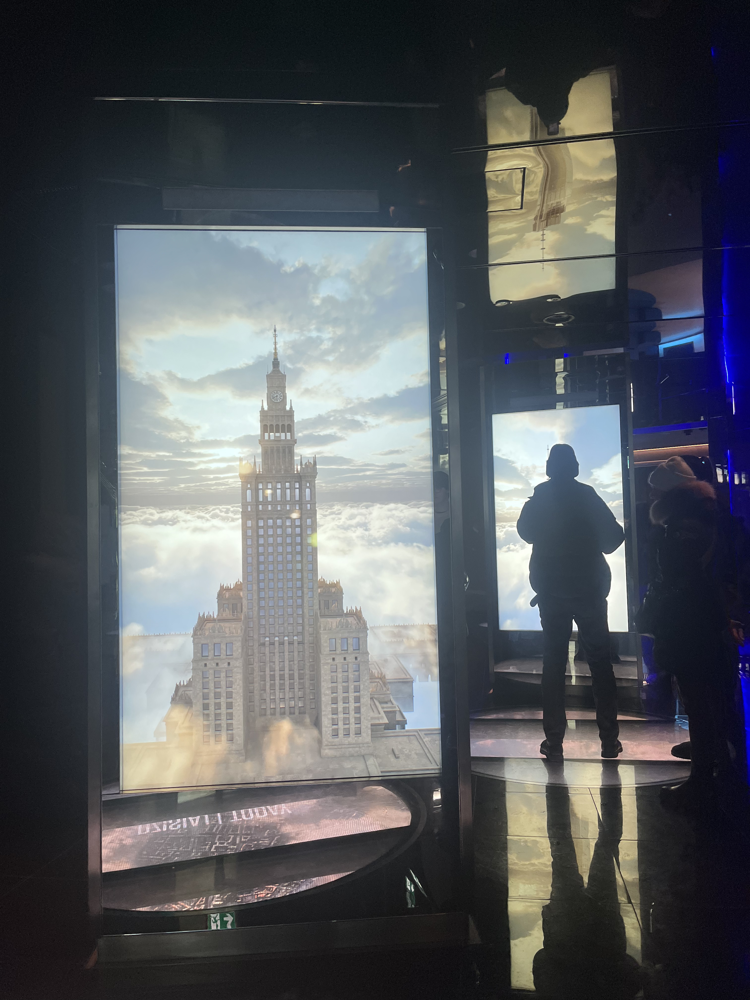
Evolution de Varsovie au fur des années.
Nous avions réservé la visite dans la matinée, mais la neige s'est invitée dans l'après-midi et, en soirée... le brouillard était de la partie. Résultat : on ne voyait absolument rien depuis le sommet ! Nous avions choisi le créneau nocturne pour admirer les lumières de Varsovie, il faudra donc impérativement y retourner.
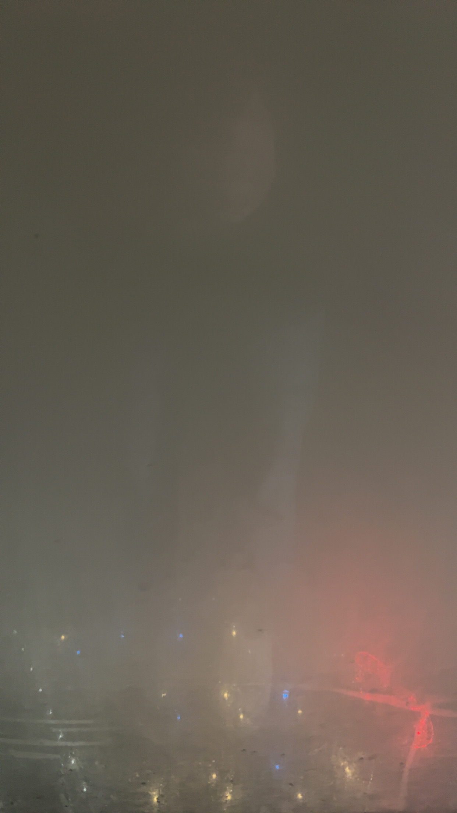
Vue très dégagée du haut de la tour.
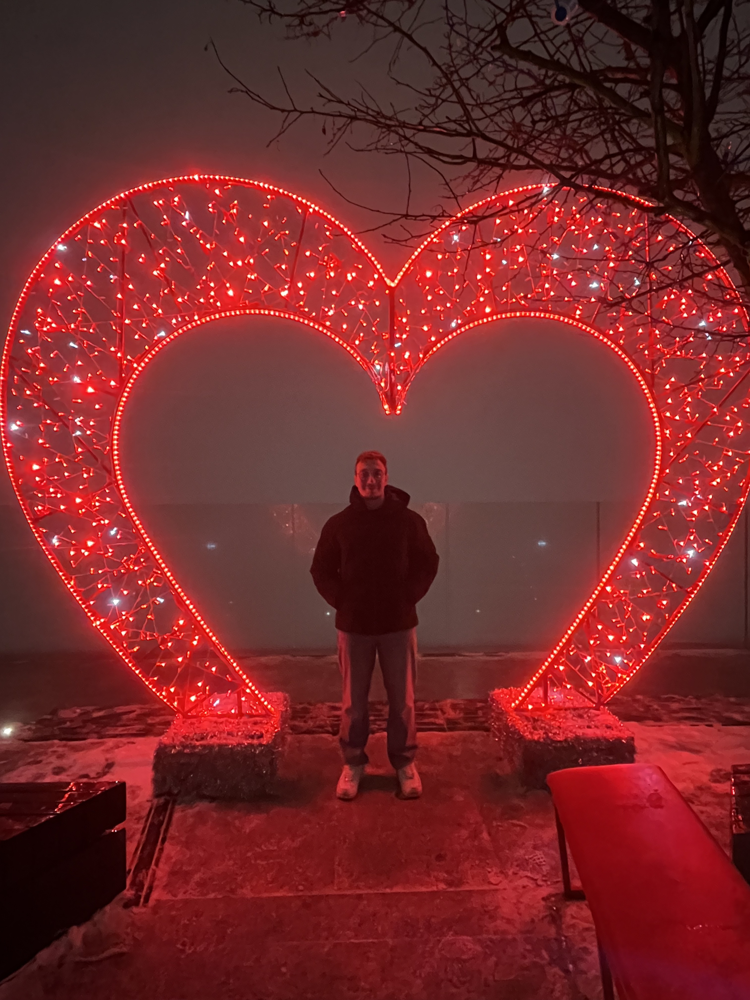
Photo dans le jardin devant le bar de la tour au 49ème étage.
17 Février 2026 - 21h
Premier soir à Varsovie
Premiers pas dans la capitale. La ville surprend par sa modernité et sa propreté. Ici, le rythme est marqué par le soleil qui se couche très tôt, mettant en avant les nombreuses lumières de la ville.
Première sortie dans la ville de Varsovie.
17 Février 2026 - 18h
Découverte de ma chambre
Bien arrivés dans notre appartement, il est temps de découvrir ma chambre. Elle est conforme aux photos, très spacieuse et confortable ! Le reste de l'appartement est lui aussi fidèle à l'annonce.
Présentation de ma chambre pour 5 mois.
17 Février 2026 - 17h
Arrivée à Varsovie !!!
Après un périple de 24 heures en bus, nous y sommes enfin ! Le temps est passé plus vite que prévu. Malgré l'appréhension du voyage, j'ai retrouvé toutes mes valises sur le quai.
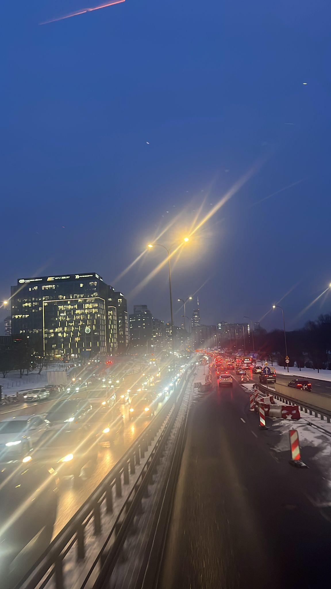
L'arrivée tant attendue en terre polonaise.
Le choc thermique est immédiat : -5°C au thermomètre, mais un ressenti proche des -8°C à cause d'un vent très froid. Direction l'appartement en Uber.
16 Février 2026 - Dans la nuit
Traversée de l'Allemagne
Douze heures à traverser l'Allemagne, rythmées par les villes de Francfort et de Dresde. J'ai plutôt bien dormi cette nuit dans le bus, environ 6h. J'ai cependant raté des arrêts.
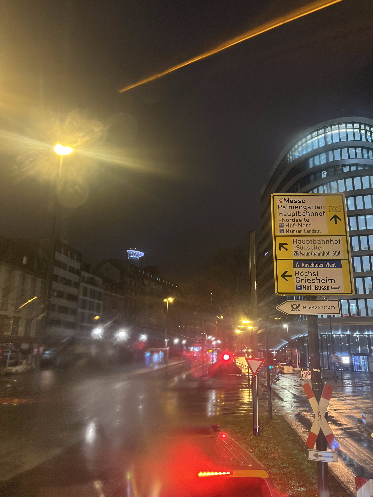
Passage par les gratte-ciel de Francfort.
C'est à Dresde que la neige a fait sa première apparition. Elle ne nous quittera plus jusqu'à Varsovie, qui en est partiellement recouverte.
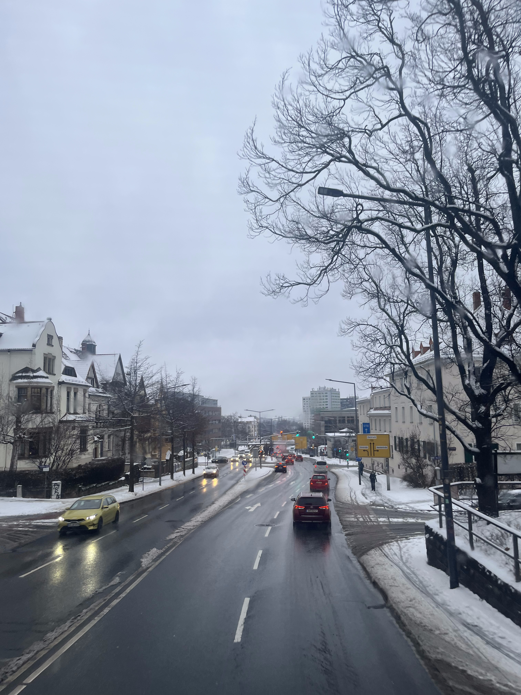
Dresde sous la neige.
16 Février 2026 - 22h
Passage de la frontière allemande
Première frontière franchie. La police allemande a procédé à un contrôle rigoureux de tous les passagers. Une formalité un peu impressionnante, mais tout s'est déroulé sans problèmes.
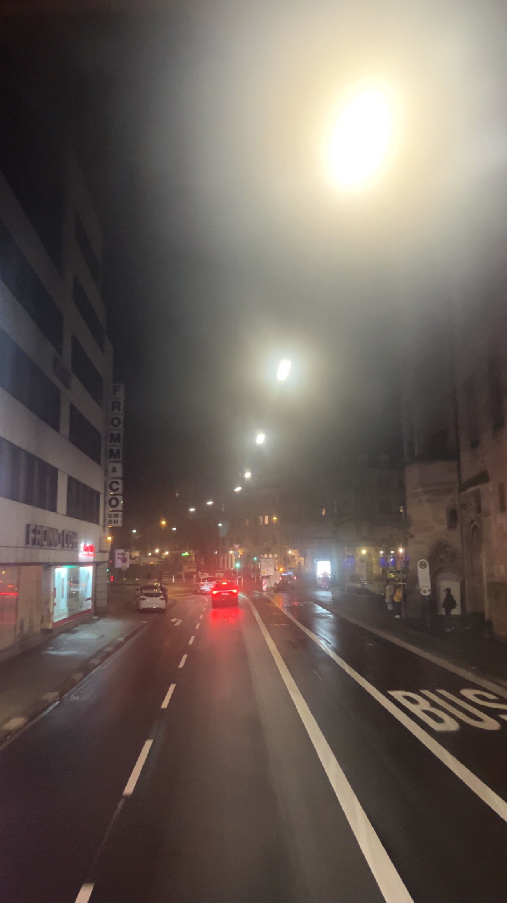
Première escale à Sarrebruck.
Petite pause à Sarrebruck. Je commence à m'inquiéter pour mes valises dès le premier arrêt !
16 Février 2026 - 17h
On est partis !
Stratégie payante : nous avons réservé les places tout à l'avant du bus. Résultat ? Une vue panoramique incroyable, un espace conséquent pour les jambes et une température idéale. Le voyage commence bien.
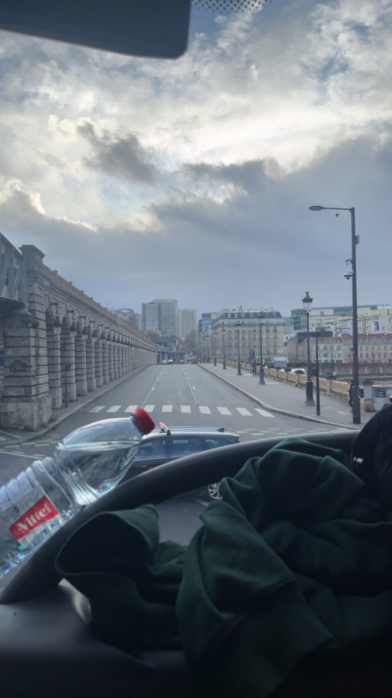
Vue depuis nos sièges à la sortie de Paris.
16 Février 2026 - 16h40
Le grand départ 2
Après une première liaison depuis Poitiers, j'ai retrouvé Hugo, mon futur colocataire, dans un café parisien. Quelques provisions pour la route et nous voici à la gare de Bercy, prêts à embarquer dans le bus pour Varsovie.
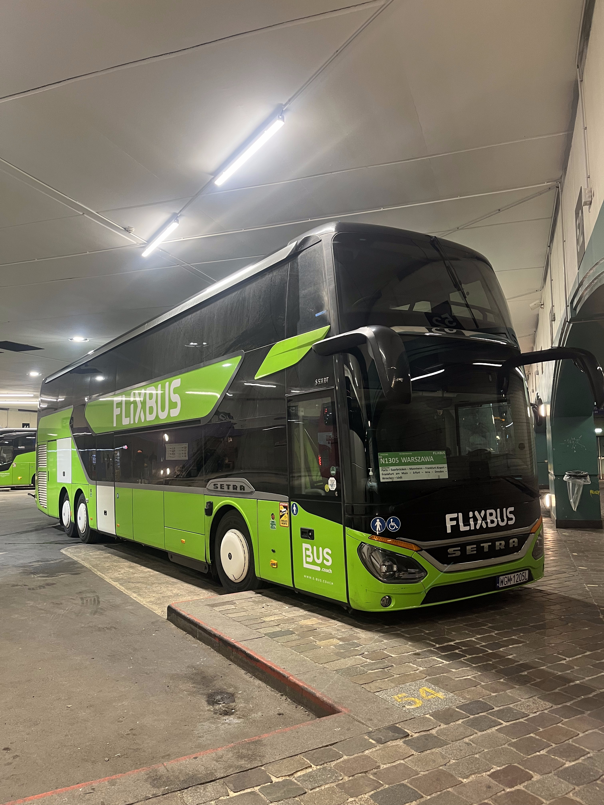
Le FlixBus, notre maison pour les prochaines 24 heures.
16 Février 2026 - 9h00
Le grand départ
Le réveil sonne à 6h. L'aventure débute réellement sur le quai de la gare de Poitiers. Malgré un léger retard du bus, l'émotion est là au moment de dire au revoir à Louise. Le cœur est un peu lourd...
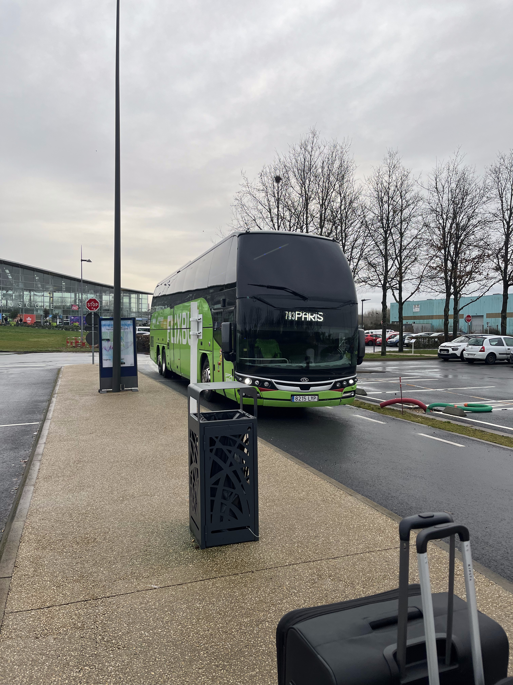
Première étape : Poitiers - Paris.
Première leçon de voyage : le confort et l'odeur des bus sont parfois aléatoires... Heureusement, ce premier trajet n'a duré que quatre heures !
13 Février 2026
Dernier repas en famille
Pour mon anniversaire et mon départ, nous nous sommes réunis en famille autour d'un excellent repas à la nouvelle crêperie d'Échiré.
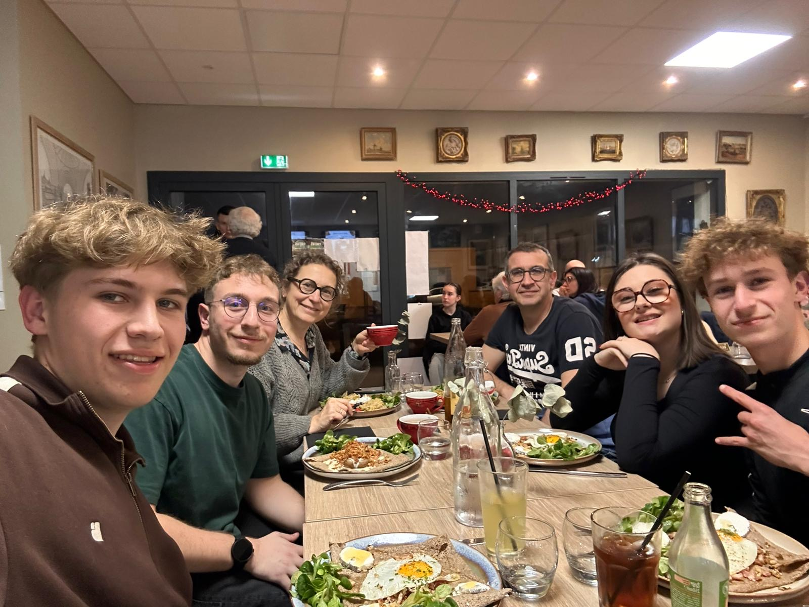
Derniers instants précieux en famille à Échiré.
L'heure des adieux a sonné, le reste de la famille partant au ski dès le lendemain. Une séparation émouvante, mais comme on dit : « Ce n'est qu'un au revoir ! »
12 Février 2026
Logistique et préparatifs
L'itinéraire se précise. Grâce aux bons conseils de Papy Loulou, j'ai réservé un FlixBus entre Poitiers et Paris Bercy.
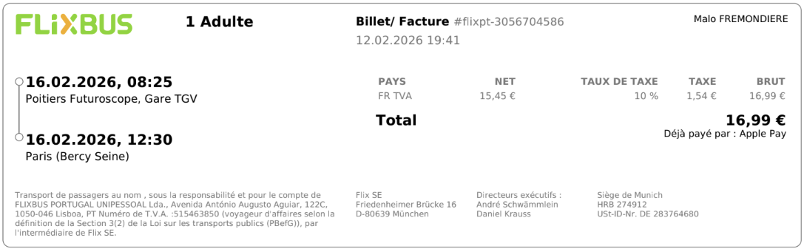
Le bus pour la première étape du voyage.
Le programme est calé : Louise me dépose à Poitiers à 8h. Un départ de la maison à 6h45 !
21 Janvier 2026
La traversée de l'Europe est réservée
L'étape cruciale est franchie : les billets pour Varsovie sont en poche. 24 heures de route nous attendent. C'est un long périple, mais c'est exactement là que le voyage débutera.
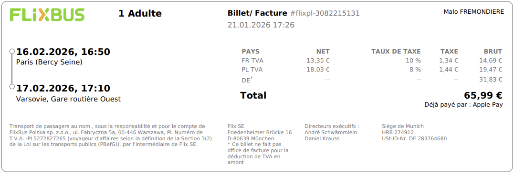
24 heures de route pour changer de vie.
Le décompte est lancé. La route sera longue, mais l'arrivée n'en sera que plus belle.
Décembre 2025
Le logement est trouvé !
Dénicher un logement pour trois fut un véritable défi. Après avoir exploré plusieurs pistes, nous avons finalement trouvé la solution idéale : trois chambres dans une colocation spacieuse.
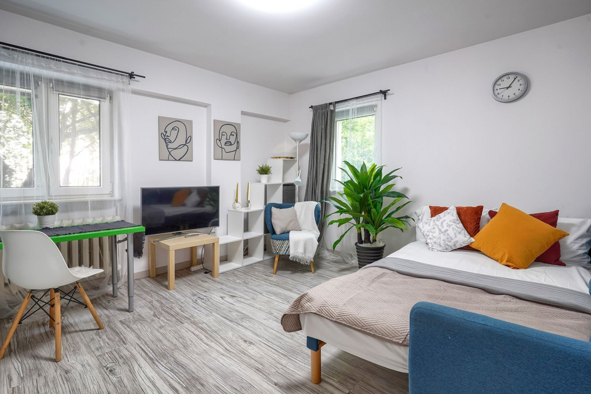
Ma future chambre, prête à m'accueillir.
L'appartement deviendra notre camp de base pour ce semestre. Emménagement prévu le 17 février pour prendre nos marques avant la rentrée universitaire le 23.
Septembre 2025
Le choix de la Pologne
Pourquoi Varsovie ? Entre les opportunités académiques et la découverte d'une culture dynamique, mon choix s'est tourné vers la Pologne. Cerise sur le gâteau : deux amis de promo m'accompagnent dans cette expatriation de cinq mois.